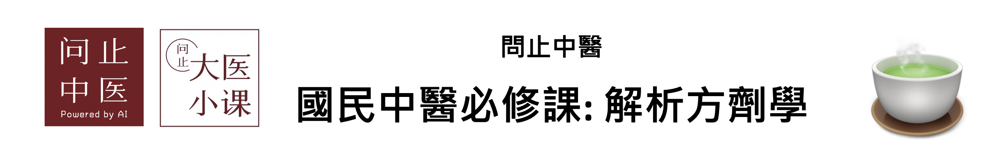

| - | 溫熱藥 | 平藥 | 寒涼藥 |
| 補藥 | 葛根湯,桂枝人參湯,苓桂朮甘湯,吳茱萸湯 | ||
| 平藥 | |||
| 瀉藥 | 麻黃附子細辛湯 | 桃核承氣湯,五苓散,鉤藤散 |
| - | 升性藥 | 平藥 | 降性藥 |
| 散性藥 | 葛根湯 | 麻黃附子細辛湯 | 桃核承氣湯,五苓散,鉤藤散 |
| 平藥 | 吳茱萸湯 | ||
| 收性藥 | 桂枝人參湯 | 苓桂朮甘湯 |
| 濕性藥 | 中性藥 | 燥性藥 |
| 桃核承氣湯,葛根湯 | 吳茱萸湯 | 五苓散,桂枝人參湯,苓桂朮甘湯,鉤藤散,麻黃附子細辛湯 |
| 方劑 | 功能 |
| 桃核承氣湯 | 逐瘀瀉熱。 |
| 葛根湯 | 袪風解肌，和血通脈。 |
| 五苓散 | 利水滲濕，溫陽化氣。 |
| 桂枝人參湯 | 溫陽健脾，解表散寒。 |
| 苓桂朮甘湯 | 溫陽化飲，健脾利濕。 |
| 鉤藤散 | 平肝止痙。 |
| 吳茱萸湯 | 溫中補虛，降逆止嘔。 |
| 麻黃附子細辛湯 | 助陽解表。 |